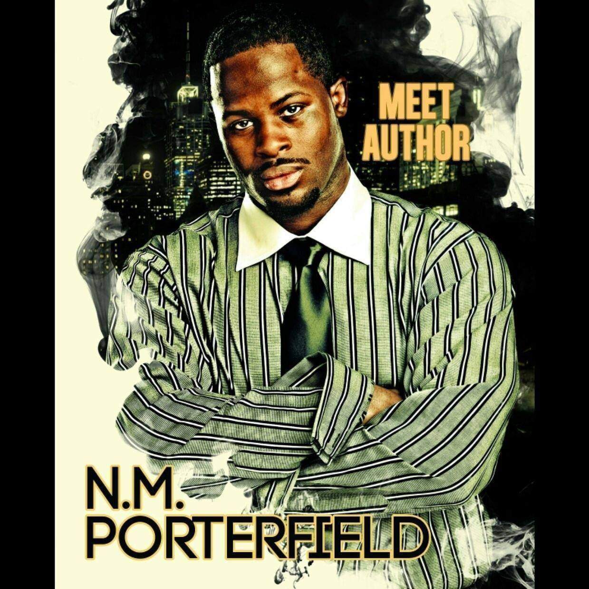

Everyone has a story to tell. But N.M. Porterfield is a paragon for the creative writing process. Whether its writing books or comic books, making music, or writing poems and screen plays, N.M. thrives in literary artistic expression. His insatiable need to create new worlds, characters and stories that explore the realms of reality and challenging the notions of what is possible.
N.M. Began writing at the age of 7. Although his work was mostly with poetry, his love of freely creating imaginative worlds was cemented at that time. This was coupled with his fascination for fantasy in film and television as he often wondered what it would be like to create characters and worlds of his own. From superheroes to worlds of magic and advanced technology, there was nothing that N.M. felt he couldn’t create. The possibilities were endless, and so was his desire to create.
By his early twenties N.M. had begun working on his first book titled "The Lovers Man-ual". It took him nearly three years to complete, after going back and forth to ensure he had fully told the story that he wanted to tell. In 2015, it was released to the public. The book, which is a strategy guide for dating, followed his own experiences and added in advice for how to effectively navigate the world of romance. Although he self published, the book was a relative success. He sold out of his first shipment in less than 30 days.
Becoming more comfortable with his own creative writing process and following the success of "The Lovers Man-ual", N.M. released the first book of his most popular series "Thrill of the Hunt". "Thrill of the Hunt" was his first fictional work and was one of his most well received books by readers. It followed the story of a young man who, after his mother's murder, was taken in by a secret society and raised to be an assassin. But the skills he learned as an assassin, soon became necessary for his own survival as he is targeted by the same people who trained him.
With the success of those first two books, N.M. Had an explosion of creativity. He spent a year doing nothing but writing and was able to finish over 20 books in that time. N.M. also wanted to return to his roots and release a collection of poetry, his first artistic love. He released two books of poetry. The first titled "The Missing Piece" and the second "Levels" both of which tell, not only his story but also capture his worldview and his experiences in poetic rhyme. N.M. also was always a fan of comic books and had envisioned creating his own comic book universe. So by utilizing his writing skills and partnering with various artistic talents he created several different comic book series such as G.H.O.S.T, Hero city Rejects, and Golem Gladiators Rock.Beyond writing books and comics, N.M. has begun working on his first screen play which he hopes to direct himself.
As a husband and father of two boys, N.M. Continues to share his creativity with the world by creating works that can reach everyone.One of the most important staples for his writing is ensuring that he provides opportunities for characters who typically don't get representation to have their stories told. To N.M., ensuring that new stories are told with new faces, is a necessary part of true artistic expression. N.M. wants to inspire others through his own creativity by pushing his own limits and breaking down the barriers to creativity, one story at a time.